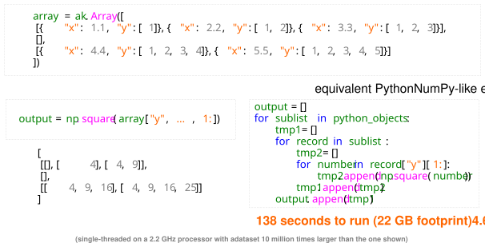
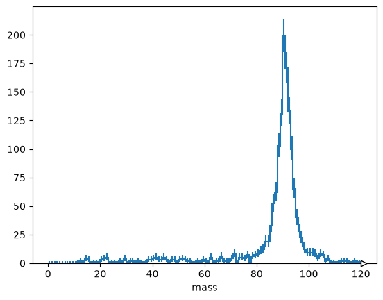
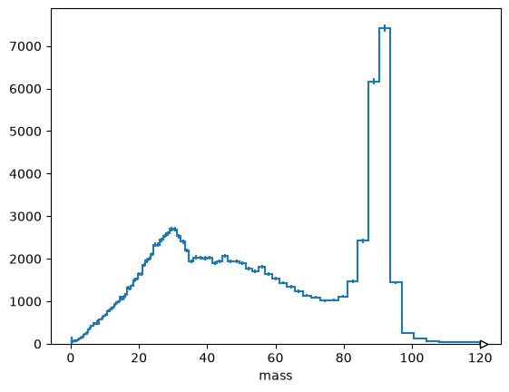

Uproot Awkward Columnar HATS#
Originally presented as part of CMS HATS training on June 14, 2021.
What about an array of lists?#
import skhep_testdata
import awkward as ak
import numpy as np
import uproot
events = uproot.open(skhep_testdata.data_path("uproot-HZZ.root"))["events"]
events.show()
name | typename | interpretation
---------------------+--------------------------+-------------------------------
NJet | int32_t | AsDtype('>i4')
Jet_Px | float[] | AsJagged(AsDtype('>f4'))
Jet_Py | float[] | AsJagged(AsDtype('>f4'))
Jet_Pz | float[] | AsJagged(AsDtype('>f4'))
Jet_E | float[] | AsJagged(AsDtype('>f4'))
Jet_btag | float[] | AsJagged(AsDtype('>f4'))
Jet_ID | bool[] | AsJagged(AsDtype('bool'))
NMuon | int32_t | AsDtype('>i4')
Muon_Px | float[] | AsJagged(AsDtype('>f4'))
Muon_Py | float[] | AsJagged(AsDtype('>f4'))
Muon_Pz | float[] | AsJagged(AsDtype('>f4'))
Muon_E | float[] | AsJagged(AsDtype('>f4'))
Muon_Charge | int32_t[] | AsJagged(AsDtype('>i4'))
Muon_Iso | float[] | AsJagged(AsDtype('>f4'))
NElectron | int32_t | AsDtype('>i4')
Electron_Px | float[] | AsJagged(AsDtype('>f4'))
Electron_Py | float[] | AsJagged(AsDtype('>f4'))
Electron_Pz | float[] | AsJagged(AsDtype('>f4'))
Electron_E | float[] | AsJagged(AsDtype('>f4'))
Electron_Charge | int32_t[] | AsJagged(AsDtype('>i4'))
Electron_Iso | float[] | AsJagged(AsDtype('>f4'))
NPhoton | int32_t | AsDtype('>i4')
Photon_Px | float[] | AsJagged(AsDtype('>f4'))
Photon_Py | float[] | AsJagged(AsDtype('>f4'))
Photon_Pz | float[] | AsJagged(AsDtype('>f4'))
Photon_E | float[] | AsJagged(AsDtype('>f4'))
Photon_Iso | float[] | AsJagged(AsDtype('>f4'))
MET_px | float | AsDtype('>f4')
MET_py | float | AsDtype('>f4')
MChadronicBottom_px | float | AsDtype('>f4')
MChadronicBottom_py | float | AsDtype('>f4')
MChadronicBottom_pz | float | AsDtype('>f4')
MCleptonicBottom_px | float | AsDtype('>f4')
MCleptonicBottom_py | float | AsDtype('>f4')
MCleptonicBottom_pz | float | AsDtype('>f4')
MChadronicWDecayQ... | float | AsDtype('>f4')
MChadronicWDecayQ... | float | AsDtype('>f4')
MChadronicWDecayQ... | float | AsDtype('>f4')
MChadronicWDecayQ... | float | AsDtype('>f4')
MChadronicWDecayQ... | float | AsDtype('>f4')
MChadronicWDecayQ... | float | AsDtype('>f4')
MClepton_px | float | AsDtype('>f4')
MClepton_py | float | AsDtype('>f4')
MClepton_pz | float | AsDtype('>f4')
MCleptonPDGid | int32_t | AsDtype('>i4')
MCneutrino_px | float | AsDtype('>f4')
MCneutrino_py | float | AsDtype('>f4')
MCneutrino_pz | float | AsDtype('>f4')
NPrimaryVertices | int32_t | AsDtype('>i4')
triggerIsoMu24 | bool | AsDtype('bool')
EventWeight | float | AsDtype('>f4')
events["Muon_Px"].array()
[[-52.9, 37.7], [-0.816], [49, 0.828], [22.1, 76.7], [45.2, 39.8], [9.23, -5.79], [12.5, 29.5], [34.9], [-53.2, 11.5], [-67, -18.1], ..., [14.9], [-24.2], [-9.2], [34.5, -31.6], [-39.3], [35.1], [-29.8], [1.14], [23.9]] --------------- backend: cpu nbytes: 34.7 kB type: 2421 * var * float32
events["Muon_Px"].array(entry_stop=20).tolist()
[[-52.89945602416992, 37.7377815246582],
[-0.8164593577384949],
[48.987831115722656, 0.8275666832923889],
[22.08833122253418, 76.6919174194336],
[45.171321868896484, 39.75095748901367],
[9.228110313415527, -5.793715000152588],
[12.538717269897461, 29.541839599609375],
[34.883758544921875],
[-53.16697311401367, 11.491869926452637],
[-67.01485443115234, -18.118755340576172],
[15.983028411865234, 34.68440628051758],
[-70.51190948486328, -38.028743743896484],
[58.94381332397461],
[-15.587870597839355],
[-122.33011627197266, -1.0597527027130127],
[-46.70415496826172, 39.020023345947266],
[51.29465866088867, 17.45092010498047],
[43.28120040893555],
[-45.92393493652344, 22.549766540527344],
[43.29360580444336, -33.28158187866211, -4.376191139221191]]
This is what Awkward Array was made for. NumPy’s equivalent is cumbersome and inefficient.
jagged_numpy = events["Muon_Px"].array(entry_stop=20, library="np")
jagged_numpy
array([array([-52.899456, 37.73778 ], dtype=float32),
array([-0.81645936], dtype=float32),
array([48.98783 , 0.8275667], dtype=float32),
array([22.088331, 76.69192 ], dtype=float32),
array([45.17132 , 39.750957], dtype=float32),
array([ 9.22811 , -5.793715], dtype=float32),
array([12.538717, 29.54184 ], dtype=float32),
array([34.88376], dtype=float32),
array([-53.166973, 11.49187 ], dtype=float32),
array([-67.014854, -18.118755], dtype=float32),
array([15.983028, 34.684406], dtype=float32),
array([-70.51191 , -38.028744], dtype=float32),
array([58.943813], dtype=float32),
array([-15.587871], dtype=float32),
array([-122.33012 , -1.0597527], dtype=float32),
array([-46.704155, 39.020023], dtype=float32),
array([51.29466, 17.45092], dtype=float32),
array([43.2812], dtype=float32),
array([-45.923935, 22.549767], dtype=float32),
array([ 43.293606, -33.28158 , -4.376191], dtype=float32)],
dtype=object)
What if I want the first item in each list as an array?
np.array([x[0] for x in jagged_numpy])
array([ -52.899456 , -0.81645936, 48.98783 , 22.088331 ,
45.17132 , 9.22811 , 12.538717 , 34.88376 ,
-53.166973 , -67.014854 , 15.983028 , -70.51191 ,
58.943813 , -15.587871 , -122.33012 , -46.704155 ,
51.29466 , 43.2812 , -45.923935 , 43.293606 ],
dtype=float32)
This violates the rule from 1-python-performance.ipynb: don’t iterate in Python.
jagged_awkward = events["Muon_Px"].array(entry_stop=20, library="ak")
jagged_awkward
[[-52.9, 37.7], [-0.816], [49, 0.828], [22.1, 76.7], [45.2, 39.8], [9.23, -5.79], [12.5, 29.5], [34.9], [-53.2, 11.5], [-67, -18.1], [16, 34.7], [-70.5, -38], [58.9], [-15.6], [-122, -1.06], [-46.7, 39], [51.3, 17.5], [43.3], [-45.9, 22.5], [43.3, -33.3, -4.38]] ---------------------- backend: cpu nbytes: 312 B type: 20 * var * float32
jagged_awkward[:, 0]
[-52.9, -0.816, 49, 22.1, 45.2, 9.23, 12.5, 34.9, -53.2, -67, 16, -70.5, 58.9, -15.6, -122, -46.7, 51.3, 43.3, -45.9, 43.3] -------- backend: cpu nbytes: 80 B type: 20 * float32
Awkward Array is a general-purpose library: NumPy-like idioms on JSON-like data#

Main idea: slicing through structure is computationally inexpensive#
Slicing by field name doesn’t modify any large buffers and ak.zip only scans them to ensure they’re compatible (not even that if depth_limit=1).
array = events.arrays()
array
[{NJet: 0, Jet_Px: [], Jet_Py: [], Jet_Pz: [], Jet_E: [], Jet_btag: [], ...},
{NJet: 1, Jet_Px: [-38.9], Jet_Py: [19.9], Jet_Pz: [-0.895], Jet_E: ..., ...},
{NJet: 0, Jet_Px: [], Jet_Py: [], Jet_Pz: [], Jet_E: [], Jet_btag: [], ...},
{NJet: 3, Jet_Px: [-71.7, 36.6, -28.9], Jet_Py: [93.6, ...], Jet_Pz: ..., ...},
{NJet: 2, Jet_Px: [3.88, 4.98], Jet_Py: [-75.2, ...], Jet_Pz: [...], ...},
{NJet: 2, Jet_Px: [-46.3, 27.7], Jet_Py: [27.3, ...], Jet_Pz: [...], ...},
{NJet: 1, Jet_Px: [-82.1], Jet_Py: [47.7], Jet_Pz: [-262], Jet_E: [279], ...},
{NJet: 1, Jet_Px: [27.9], Jet_Py: [-32.9], Jet_Pz: [231], Jet_E: [235], ...},
{NJet: 0, Jet_Px: [], Jet_Py: [], Jet_Pz: [], Jet_E: [], Jet_btag: [], ...},
{NJet: 1, Jet_Px: [37.9], Jet_Py: [-8.89], Jet_Pz: [-69.2], Jet_E: ..., ...},
...,
{NJet: 1, Jet_Px: [-25.6], Jet_Py: [-20.6], Jet_Pz: [-113], Jet_E: [118], ...},
{NJet: 2, Jet_Px: [3.43, 38.3], Jet_Py: [45.6, ...], Jet_Pz: [...], ...},
{NJet: 1, Jet_Px: [34], Jet_Py: [58.9], Jet_Pz: [-17], Jet_E: [70.5], ...},
{NJet: 0, Jet_Px: [], Jet_Py: [], Jet_Pz: [], Jet_E: [], Jet_btag: [], ...},
{NJet: 1, Jet_Px: [37.1], Jet_Py: [20.1], Jet_Pz: [226], Jet_E: [230], ...},
{NJet: 2, Jet_Px: [-33.2, -26.1], Jet_Py: [-59.7, ...], Jet_Pz: [...], ...},
{NJet: 1, Jet_Px: [-3.71], Jet_Py: [-37.2], Jet_Pz: [41], Jet_E: [56], ...},
{NJet: 2, Jet_Px: [-36.4, -15.3], Jet_Py: [10.2, ...], Jet_Pz: [...], ...},
{NJet: 0, Jet_Px: [], Jet_Py: [], Jet_Pz: [], Jet_E: [], Jet_btag: [], ...}]
--------------------------------------------------------------------------------
backend: cpu
nbytes: 868.1 kB
type: 2421 * {
NJet: int32,
Jet_Px: var * float32,
Jet_Py: var * ...Think of this as zero-cost:
array.Muon_Px, array.Muon_Py, array.Muon_Pz
(<Array [[-52.9, 37.7], [-0.816], ..., [23.9]] type='2421 * var * float32'>,
<Array [[-11.7, 0.693], [-24.4], ..., [-35.7]] type='2421 * var * float32'>,
<Array [[-8.16, -11.3], [20.2], ..., [162], [54.7]] type='2421 * var * float32'>)
Think of this as zero-cost:
ak.zip({"px": array.Muon_Px, "py": array.Muon_Py, "pz": array.Muon_Pz})
[[{px: -52.9, py: -11.7, pz: -8.16}, {px: 37.7, py: 0.693, pz: ..., ...}],
[{px: -0.816, py: -24.4, pz: 20.2}],
[{px: 49, py: -21.7, pz: 11.2}, {px: 0.828, py: 29.8, pz: 37}],
[{px: 22.1, py: -85.8, pz: 404}, {px: 76.7, py: -14, pz: 335}],
[{px: 45.2, py: 67.2, pz: -89.7}, {px: 39.8, py: 25.4, pz: 20.1}],
[{px: 9.23, py: 40.6, pz: -14.6}, {px: -5.79, py: -30.3, pz: 43}],
[{px: 12.5, py: -42.5, pz: -124}, {px: 29.5, py: -4.45, pz: -26.4}],
[{px: 34.9, py: -16, pz: 156}],
[{px: -53.2, py: 92, pz: 35.6}, {px: 11.5, py: -4.42, pz: -17.5}],
[{px: -67, py: 53.2, pz: 54.4}, {px: -18.1, py: -35.1, pz: 58}],
...,
[{px: 14.9, py: 32, pz: -156}],
[{px: -24.2, py: -35, pz: -19.2}],
[{px: -9.2, py: -42.2, pz: -64.3}],
[{px: 34.5, py: 28.8, pz: -151}, {px: -31.6, py: -10.4, pz: -111}],
[{px: -39.3, py: -14.6, pz: 61.7}],
[{px: 35.1, py: -14.2, pz: 161}],
[{px: -29.8, py: -15.3, pz: -52.7}],
[{px: 1.14, py: 63.6, pz: 162}],
[{px: 23.9, py: -35.7, pz: 54.7}]]
--------------------------------------------------------------------------
backend: cpu
nbytes: 65.3 kB
type: 2421 * var * {
px: float32,
py: float32,
pz: float32
}(The above is a manual version of how="zip".)
NumPy ufuncs work on these arrays (if they’re “broadcastable”).
np.sqrt(array.Muon_Px**2 + array.Muon_Py**2)
[[54.2, 37.7], [24.4], [53.6, 29.8], [88.6, 78], [81, 47.2], [41.6, 30.8], [44.4, 29.9], [38.4], [106, 12.3], [85.5, 39.5], ..., [35.3], [42.6], [43.2], [45, 33.2], [41.9], [37.8], [33.5], [63.6], [42.9]] -------------- backend: cpu nbytes: 34.7 kB type: 2421 * var * float32
And there are specialized operations that only make sense in a variable-length context.


ak.cartesian((array.Muon_Px, array.Jet_Px))
[[],
[(-0.816, -38.9)],
[],
[(22.1, -71.7), (22.1, 36.6), (22.1, ...), ..., (76.7, 36.6), (76.7, -28.9)],
[(45.2, 3.88), (45.2, 4.98), (39.8, 3.88), (39.8, 4.98)],
[(9.23, -46.3), (9.23, 27.7), (-5.79, -46.3), (-5.79, 27.7)],
[(12.5, -82.1), (29.5, -82.1)],
[(34.9, 27.9)],
[],
[(-67, 37.9), (-18.1, 37.9)],
...,
[(14.9, -25.6)],
[(-24.2, 3.43), (-24.2, 38.3)],
[(-9.2, 34)],
[],
[(-39.3, 37.1)],
[(35.1, -33.2), (35.1, -26.1)],
[(-29.8, -3.71)],
[(1.14, -36.4), (1.14, -15.3)],
[]]
------------------------------------------------------------------------------
backend: cpu
nbytes: 51.9 kB
type: 2421 * var * (
float32,
float32
)ak.combinations(array.Muon_Px, 2)
[[(-52.9, 37.7)],
[],
[(49, 0.828)],
[(22.1, 76.7)],
[(45.2, 39.8)],
[(9.23, -5.79)],
[(12.5, 29.5)],
[],
[(-53.2, 11.5)],
[(-67, -18.1)],
...,
[],
[],
[],
[(34.5, -31.6)],
[],
[],
[],
[],
[]]
-----------------
backend: cpu
nbytes: 31.5 kB
type: 2421 * var * (
float32,
float32
)Arrays can have custom behavior#
The following come from the new Vector library.
import vector
vector.register_awkward()
muons = ak.zip({"px": array.Muon_Px, "py": array.Muon_Py, "pz": array.Muon_Pz, "E": array.Muon_E}, with_name="Momentum4D")
muons
[[{px: -52.9, py: -11.7, pz: -8.16, E: 54.8}, {px: 37.7, py: 0.693, ...}],
[{px: -0.816, py: -24.4, pz: 20.2, E: 31.7}],
[{px: 49, py: -21.7, pz: 11.2, E: 54.7}, {px: 0.828, py: 29.8, ...}],
[{px: 22.1, py: -85.8, pz: 404, E: 413}, {px: 76.7, py: -14, ...}],
[{px: 45.2, py: 67.2, pz: -89.7, E: 121}, {px: 39.8, py: 25.4, ...}],
[{px: 9.23, py: 40.6, pz: -14.6, E: 44.1}, {px: -5.79, py: -30.3, ...}],
[{px: 12.5, py: -42.5, pz: -124, E: 132}, {px: 29.5, py: -4.45, ...}],
[{px: 34.9, py: -16, pz: 156, E: 160}],
[{px: -53.2, py: 92, pz: 35.6, E: 112}, {px: 11.5, py: -4.42, ...}],
[{px: -67, py: 53.2, pz: 54.4, E: 101}, {px: -18.1, py: -35.1, ...}],
...,
[{px: 14.9, py: 32, pz: -156, E: 160}],
[{px: -24.2, py: -35, pz: -19.2, E: 46.7}],
[{px: -9.2, py: -42.2, pz: -64.3, E: 77.4}],
[{px: 34.5, py: 28.8, pz: -151, E: 157}, {px: -31.6, py: -10.4, ...}],
[{px: -39.3, py: -14.6, pz: 61.7, E: 74.6}],
[{px: 35.1, py: -14.2, pz: 161, E: 165}],
[{px: -29.8, py: -15.3, pz: -52.7, E: 62.4}],
[{px: 1.14, py: 63.6, pz: 162, E: 174}],
[{px: 23.9, py: -35.7, pz: 54.7, E: 69.6}]]
--------------------------------------------------------------------------
backend: cpu
nbytes: 80.6 kB
type: 2421 * var * Momentum4D[
px: float32,
py: float32,
pz: floa...This is an array of lists of vectors, and methods like pt, eta, phi apply through the whole array.
muons.pt
[[54.2, 37.7], [24.4], [53.6, 29.8], [88.6, 78], [81, 47.2], [41.6, 30.8], [44.4, 29.9], [38.4], [106, 12.3], [85.5, 39.5], ..., [35.3], [42.6], [43.2], [45, 33.2], [41.9], [37.8], [33.5], [63.6], [42.9]] -------------- backend: cpu nbytes: 34.7 kB type: 2421 * var * float32
muons.eta
[[-0.15, -0.295], [0.754], [0.207, 1.04], [2.22, 2.16], [-0.955, 0.414], [-0.345, 1.13], [-1.76, -0.796], [2.11], [0.329, -1.15], [0.6, 1.18], ..., [-2.19], [-0.437], [-1.19], [-1.92, -1.92], [1.18], [2.15], [-1.24], [1.67], [1.06]] ----------------- backend: cpu nbytes: 34.7 kB type: 2421 * var * float32
muons.phi
[[-2.92, 0.0184], [-1.6], [-0.417, 1.54], [-1.32, -0.18], [0.979, 0.569], [1.35, -1.76], [-1.28, -0.149], [-0.43], [2.09, -0.367], [2.47, -2.05], ..., [1.13], [-2.17], [-1.79], [0.696, -2.82], [-2.79], [-0.384], [-2.67], [1.55], [-0.98]] ----------------- backend: cpu nbytes: 34.7 kB type: 2421 * var * float32
Let’s try an example: ΔR(muons, jets)
jets = ak.zip({"px": array.Jet_Px, "py": array.Jet_Py, "pz": array.Jet_Pz, "E": array.Jet_E}, with_name="Momentum4D")
jets
[[],
[{px: -38.9, py: 19.9, pz: -0.895, E: 44.1}],
[],
[{px: -71.7, py: 93.6, pz: 196, E: 230}, ..., {px: -28.9, py: 9.32, ...}],
[{px: 3.88, py: -75.2, pz: -360, E: 368}, {px: 4.98, py: -39.2, ...}],
[{px: -46.3, py: 27.3, pz: 51.4, E: 74.4}, {px: 27.7, py: -14.5, ...}],
[{px: -82.1, py: 47.7, pz: -262, E: 279}],
[{px: 27.9, py: -32.9, pz: 231, E: 235}],
[],
[{px: 37.9, py: -8.89, pz: -69.2, E: 79.9}],
...,
[{px: -25.6, py: -20.6, pz: -113, E: 118}],
[{px: 3.43, py: 45.6, pz: -130, E: 138}, {px: 38.3, py: -3.39, ...}],
[{px: 34, py: 58.9, pz: -17, E: 70.5}],
[],
[{px: 37.1, py: 20.1, pz: 226, E: 230}],
[{px: -33.2, py: -59.7, pz: -29, E: 74.9}, {px: -26.1, py: -19.1, ...}],
[{px: -3.71, py: -37.2, pz: 41, E: 56}],
[{px: -36.4, py: 10.2, pz: 226, E: 230}, {px: -15.3, py: -27.2, ...}],
[]]
---------------------------------------------------------------------------
backend: cpu
nbytes: 63.7 kB
type: 2421 * var * Momentum4D[
px: float32,
py: float32,
pz: floa...ak.num(muons), ak.num(jets)
(<Array [2, 1, 2, 2, 2, 2, 2, 1, ..., 1, 2, 1, 1, 1, 1, 1] type='2421 * int64'>,
<Array [0, 1, 0, 3, 2, 2, 1, 1, ..., 1, 0, 1, 2, 1, 2, 0] type='2421 * int64'>)
ms, js = ak.unzip(ak.cartesian((muons, jets)))
ms, js
(<MomentumArray4D [[], [{px: -0.816, ...}], ..., []] type='2421 * var * Mome...'>,
<MomentumArray4D [[], [{px: -38.9, ...}], ..., [...], []] type='2421 * var ...'>)
ak.num(ms), ak.num(js)
(<Array [0, 1, 0, 6, 4, 4, 2, 1, ..., 1, 0, 1, 2, 1, 2, 0] type='2421 * int64'>,
<Array [0, 1, 0, 6, 4, 4, 2, 1, ..., 1, 0, 1, 2, 1, 2, 0] type='2421 * int64'>)
ms.deltaR(js)
[[], [2.15], [], [2.9, 1.99, 2.33, 2.56, 0.972, 3.13], [2.82, 3.32, 3.4, 2.21], [1.74, 1.9, 1.93, 1.6], [2.38, 2.92], [0.515], [], [3.33, 3.1], ..., [2.7], [2.93, 2.38], [2.99], [], [3.23], [3.08, 2.55], [2.4], [1.55, 2.94], []] -------------------------------------- backend: cpu nbytes: 35.6 kB type: 2421 * var * float32
And another: muon pairs (all combinations, not just the first two per event).
ak.num(muons)
[2, 1, 2, 2, 2, 2, 2, 1, 2, 2, ..., 1, 1, 1, 2, 1, 1, 1, 1, 1] ----- backend: cpu nbytes: 19.4 kB type: 2421 * int64
m1, m2 = ak.unzip(ak.combinations(muons, 2))
m1, m2
(<MomentumArray4D [[{px: -52.9, py: -11.7, ...}], ..., []] type='2421 * var ...'>,
<MomentumArray4D [[{px: 37.7, py: 0.693, ...}], ..., []] type='2421 * var *...'>)
ak.num(m1), ak.num(m2)
(<Array [1, 0, 1, 1, 1, 1, 1, 0, ..., 0, 1, 0, 0, 0, 0, 0] type='2421 * int64'>,
<Array [1, 0, 1, 1, 1, 1, 1, 0, ..., 0, 1, 0, 0, 0, 0, 0] type='2421 * int64'>)
m1 + m2
[[{x: -15.2, y: -11, z: -19.5, t: 94.2}],
[],
[{x: 49.8, y: 8.08, z: 48.1, t: 102}],
[{x: 98.8, y: -99.8, z: 739, t: 758}],
[{x: 84.9, y: 92.7, z: -69.6, t: 172}],
[{x: 3.43, y: 10.3, z: 28.3, t: 97}],
[{x: 42.1, y: -47, z: -151, t: 172}],
[],
[{x: -41.7, y: 87.6, z: 18.2, t: 133}],
[{x: -85.1, y: 18.1, z: 112, t: 172}],
...,
[],
[],
[],
[{x: 2.94, y: 18.4, z: -262, t: 273}],
[],
[],
[],
[],
[]]
-----------------------------------------
backend: cpu
nbytes: 43.7 kB
type: 2421 * var * Momentum4D[
x: float32,
y: float32,
z: float32...(m1 + m2).mass
[[90.2], [], [74.7], [89.8], [94.9], [92.1], [53.4], [], [89.8], [96], ..., [], [], [], [76], [], [], [], [], []] -------- backend: cpu nbytes: 25.5 kB type: 2421 * var * float32
import hist
hist.Hist.new.Reg(120, 0, 120, name="mass").Double().fill(
ak.flatten((m1 + m2).mass)
).plot()
None

It doesn’t matter which coordinates were used to construct it#
array2 = uproot.open(
"https://github.com/jpivarski-talks/2023-12-18-hsf-india-tutorial-bhubaneswar/raw/main/data/SMHiggsToZZTo4L.root:Events"
).arrays(["Muon_pt", "Muon_eta", "Muon_phi", "Muon_charge"], entry_stop=100000)
import particle
muons2 = ak.zip({"pt": array2.Muon_pt, "eta": array2.Muon_eta, "phi": array2.Muon_phi, "q": array2.Muon_charge}, with_name="Momentum4D")
muons2["mass"] = particle.Particle.findall("mu-")[0].mass / 1000.0
muons2
[[{pt: 63, eta: -0.719, phi: 2.97, q: 1, mass: 0.106}, ..., {pt: 4.05, ...}],
[],
[],
[{pt: 54.3, eta: -1.06, phi: -0.362, q: 1, mass: 0.106}, ..., {pt: 3.49, ...}],
[],
[{pt: 38.5, eta: 0.315, phi: 2.05, q: -1, mass: 0.106}, {pt: 47, ...}],
[{pt: 4.45, eta: -0.986, phi: 1.12, q: 1, mass: 0.106}],
[],
[],
[],
...,
[],
[{pt: 6.47, eta: -1.08, phi: -2.1, q: -1, mass: 0.106}, {pt: 16.2, ...}],
[],
[{pt: 33.8, eta: 1.15, phi: -2.67, q: 1, mass: 0.106}, {pt: 16.4, ...}],
[{pt: 6.39, eta: -1.47, phi: 0.895, q: 1, mass: 0.106}, ..., {pt: 8.33, ...}],
[],
[{pt: 35.9, eta: 1.4, phi: -2.86, q: 1, mass: 0.106}],
[{pt: 15.1, eta: -0.84, phi: 0.0732, q: 1, mass: 0.106}],
[]]
--------------------------------------------------------------------------------
backend: cpu
nbytes: 4.3 MB
type: 100000 * var * Momentum4D[
pt: float32,
eta: float32,
phi: ...As long as you use properties (dots, not strings in brackets), you don’t need to care what coordinates it’s based on.
muons2.px
[[-62.1, 19.5, 2.05], [], [], [50.8, 22.4, 13, -1.88, 3.76, 6.11, -1.54], [], [-17.7, 19.1], [1.93], [], [], [], ..., [], [-3.29, -15.6], [], [-30, -16.2], [4, 18.7, -12.8, -8.32], [], [-34.5], [15], []] -------------------------------------------- backend: cpu nbytes: 1.4 MB type: 100000 * var * float32
muons2.py
[[10.9, -32.7, 3.49], [], [], [-19.3, -7.1, 51.2, 3.9, -3.8, -5.76, 3.13], [], [34.2, -42.9], [4.01], [], [], [], ..., [], [-5.57, 4.39], [], [-15.5, -2.18], [4.99, -2.66, 15.1, -0.266], [], [-10.1], [1.1], []] --------------------------------------------- backend: cpu nbytes: 1.4 MB type: 100000 * var * float32
muons2.pz
[[-49.3, -38, -1.32], [], [], [-68.8, -5.88, -1.4, 3.65, -6.45, -8.88, 2.96], [], [12.3, -5.59], [-5.14], [], [], [], ..., [], [-8.39, -8.74], [], [48, 3.9], [-13.1, -42.2, 5.85, 40.8], [], [68.1], [-14.2], []] ------------------------------------------------ backend: cpu nbytes: 1.4 MB type: 100000 * var * float32
muons2.E
[[80, 53.8, 4.26], [], [], [87.7, 24.2, 52.9, 5.67, 8.38, 12.2, 4.58], [], [40.4, 47.3], [6.8], [], [], [], ..., [], [10.6, 18.4], [], [58.7, 16.8], [14.6, 46.2, 20.7, 41.7], [], [76.9], [20.7], []] -------------------------------------------- backend: cpu nbytes: 2.0 MB type: 100000 * var * float64
m1, m2 = ak.unzip(ak.combinations(muons2, 2))
hist.Hist.new.Log(200, 0.1, 120, name="mass").Double().fill(
ak.flatten((m1 + m2).mass)
).plot()
None

Awkward Arrays and Vector in Numba#
Remember Numba, the JIT-compiler from 1-python-performance.ipynb? Awkward Array and Vector have been implemented in Numba’s compiler.
import numba as nb
@nb.njit
def first_big_dimuon(events):
for event in events:
for i in range(len(event)):
mu1 = event[i]
for j in range(i + 1, len(event)):
mu2 = event[j]
dimuon = mu1 + mu2
if dimuon.mass > 10:
return dimuon
first_big_dimuon(muons2)
MomentumObject4D(pt=47.82986068725586, phi=-2.6673949400531214, eta=-1.3629037141799927, mass=89.49191465603693)